Index
- About
- Requirements
- Installation with default settings
- Trouble shooting
- Architectural concepts
- Provided CredentialsProviders
- Provided ObserverAccountProviders
- Provided NotifyProviders
- Implementing an own CredentialsProvider
- Implementing an own ObserverAccountProvider
- Implementing an own NotifyProvider
About
TFSWIWatcher is a service which allows you to register for watching workitems in Team Foundation Server. The service can be configured to use different logic to retrieve accounts to be notified and to deliver messages to the accounts to be notified.
By default TFSWIWatcher watches all changes of workitems and determines the accounts to be notified by looking up the texbox in a new tab of the workitem called Observers. This tab holds a list of account names - each account name on a singe line:

TFSWIWatcher will then determine the email addresses of the provided account names and will send a mail to each account.
Requirements
- Microsoft .NET Framework 3.5 Service Pack 1
- Visual Studio Team System 2008 Team Foundation Server Power Tools
Installation with default settings
.Net Framework 3.5 SP 1 Installation
If you've not already installed .Net Framework 3.5 please download and install it using the link under >> Requirements <<.
Team Foundation Power Tools Installation
If you've not already installed TFPT please download and install it using the link under >> Requirements <<. You will need TFPT to complete the next step.
Adding the Observer-Tab for Workitems
After installing TFPT there will be a new Menu under Tools called "Process Editor":

Please navigate to the selection in the above screenshot.
In the next dialog choose one of the provided workitem types (you will need to reapeat the following steps for all other types):

In the next dialog click "New" and fill the poup with the Information from the screenshot and press "ok":

In the next dialog click "New" and fill the poup with the Information from the screenshot and press "ok":

Call it "Observers":

Add a "New Control" to the newly created Tab Page:

Configure the Control exactly as in the following screenshot:

Save the result and after opening a workitem you'll have a new Tab "Observers":
Settings in TFSWIWatcher.Service.exe.config
There are 2 important sections ConfigSettings and system.net. Please change the Teamserver in ConfigSettings and if the provided port conflicts with another app on the server running TFSWIWatcher please also change the port:
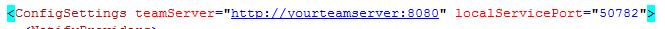After this please configure your mail settings in the following section:
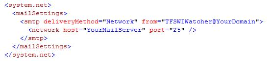Installing the service
Just run the install.bat script to install the service. You will be prompted for credentials the service should run with. Please specify an account having enough rights for the Team Foundation Server.
Start-Options for the Service
After installing the service, the service can be found in the service control panel as TFSWIWatcherService. Configure the service like in the following screenshot:
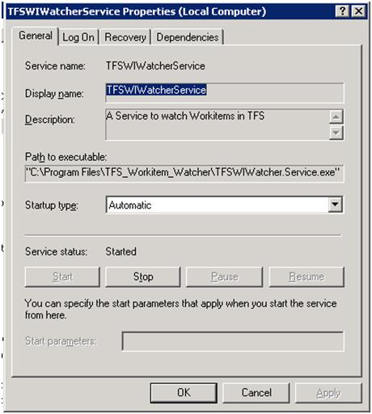Trouble shooting
When errors arise they are logged to a file named log.txt. Lo4Net is used for logging. You can change the way logging is done through modifying the following section:
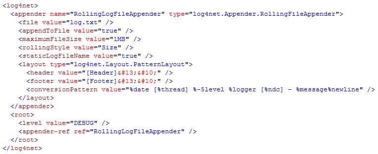More information about how to change this config and which possibilities exist can be found at the >> Log4Net website <<.
Architectural concepts
Overview

1. Getting notified about workitem changes
On startup the windows service is creating a windows communication foundation host. It then registeres the wcf host endpoint with team foundation server using the tfs api. The type of registration is soap. On successful registration with tfs the service is getting a unique id for the registration. When the service is shutting down, the unique id is used to unsubscribe from getting further events. To connect to tfs the service is using a CredentialsProvider which is configured in the configuration file TFSWIWatcher.Service.exe.config under the configuration node CredentialsProvider. By default the service is using the UICredentialsProvider which takes the credentials the service runs with to connect to tfs. More information about CredentialsProviders are under >> this section <<.
2. Determining accounts to notify
In the configuration file TFSWIWatcher.Service.exe.config there is a section called ObserverAccountProviders. This section lists all providers collecting accounts to notify. By default there is a single provider in this list called TFSObserverAccountProvider. This provider gets the accounts from the observer field in the workitem that was changed by parsing the field line (account name) by line (account name). More information about ObserverAccountProviders are under >> this section <<.
3. Notifying accounts
In the configuration file TFSWIWatcher.Service.exe.config there is a section called NotifyProviders . This section lists all providers notifying accounts. By default there is a single provider in this list called MailNotifyProvider. This provider notifies the accounts by getting there mail addresses from user profile and sending them a mail containing a change report. More information about NotifyProviders are under >> this section <<.
Provided CredentialsProviders
Choosing a CredentialsProvider
You can change the CredentialsProvider by changing the values of assemblyName and providerClass in config TFSWIWatcher.Service.exe.config:
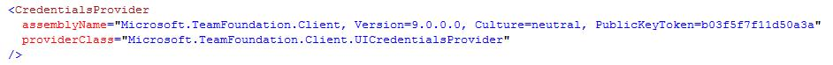The above configuration is for the CredentialsProvider UICredentialsProvider, which is the default provider.
1. UICredentialsProvider
This provider is the default CredentialsProvider to use it just change the CredentialsProvider section to look like the one under heading Choosing a CredentialsProvider.This provider takes the credentials the service is running with and communictaes with team foundation server using this credentials. To use this provider the service should be cofigured to run with an account having enough rights to communicate with team foundation server. This provider has no further configuration settings.
2. ConfigCredentialsProvider
This provider uses predefined credentials which are configured in config TFSWIWatcher.Service.exe.config to communicate with team foundation server. This his helpful if you want to run the service with very few permissions. Or if the service is running at a different server then team foundation server and your running team foundation server without a domain. In this case you're not able to run the service under an account name which is able to communicate with team foundation server. To choose this provider change the CredentialsProvider section to look like the following section:
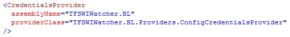The next step is to register a configuration section for this provider. This configuration section is used to provider the username, password and domain:
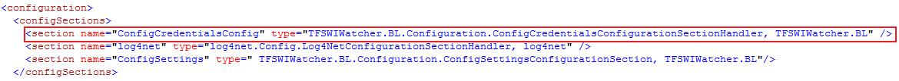The last step is to add the section where you need to provide the credentials used to connect to team foundation server. In the following case you see the credentials I've used to connect to during development to test on the VPC image microsoft has provided to test team foundation server:
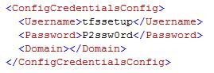Provided ObserverAccountProviders
Choosing an ObserverAccountProvider
You can add/remove/enable/disable an ObserverAccountProvider by changing the ObserverAccountProviders section. By default this section looks like the section below:

The above configuration is for the TFSObserverAccountProvider, which is the default ObserverAccountProvider. Compared to CredentialsProviders there can be multiple ObserverAccountProviders. You can disabled a provider by setting the enabled attribute to false or by removing the provider from the ObserverAccountProviders section.
1. TFSObserverAccountProvider
This provider is the default ObserverAccountProvider to use it just add the line from the above heading. This provider needs further information which is configured using a custom configuration section. This section must be registered using the following line:

The last step is to add the following section and to customize the settings:

The setting ObserverFieldName is the field of the workitem where the TFSObserverAccountProvider searches for accounts to notify. The default field name is DNE.Observers. You can change the name of the field but dont forgett to consider it in >> this step <<.The RegexPattern and RegexOptions field is used to extract the account names from the field holding the account names. The regular expression used here extracts the account names line by line. If you want to change the regular expression please consider having a group called user in your regular expression - this is mandatory.
1. XMLObserverAccountProvider
This ObserverAccountProvider is used to define which account gets notified when a workitem changed using a xml config file. Here is a saple config file:
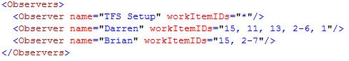In the above example "TFS Setup" will be notified about all changes of every workitem (*). "Darren" will be notified about changes to workitems with ID: 15,11,13,2,3,4,5,6 or 1. And "Brian" will be notified about changes to workitems with ID: 15,2,3,4,5,6 or 7. As you can see in the example its possible to get notified about changes of all workitems using a star (*). Its possible to provide single IDs as well as ranges of IDs using a a hyphen between two IDs. To enable this provider add the following line to your ObserverAccountProviders section:
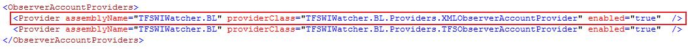This provider needs further information which is configured using a custom configuration section. This section must be registered using the following line:
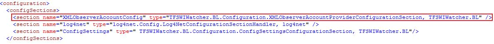The last step is to add the following section and to customize the settings:
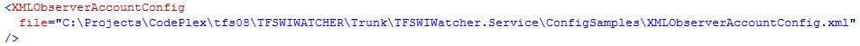The only setting here is the file where to find the xml defining which account gets notified for which workitem change.
Provided NotifyProviders
Choosing a NotifyProvider
You can add/remove/enable/disable a NotifyProvider by changing the NotifyProviders section. By default this section looks like the section below:

The above configuration is for the MailNotifyProvider, which is the default NotifyProvider. Compared to CredentialsProviders there can be multiple NotifyProviders. You can disabled a provider by setting the enabled attribute to false or by removing the provider from the NotifyProviders section.
1. MailNotifyProvider
This provider is notifying accounts through sending mails. The mail address of the account names is determined through team foundation server API. This provider is the default NotifyProvider, to use it just add the line from the above heading. This provider needs further information which is configured using a custom configuration section. This section must be registered using the following line:

The next step is to add the following section and to customize the settings:

The only thing you can do in the above section is to provide the path to a filename acting as a xsl transformation or you can modify the existing file to satisfy your needs. The last step is to configure the settings for sending the mails:
Implementing an own CredentialsProvider
To implement your own CredentialsProvider just create a project and reference the assembly Microsoft.TeamFoundation.Client and create a class implementing the interface ICredentialsProvider which is located in namespace Microsoft.TeamFoundation.Client. The interface has the following definition:
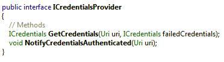Implementing an own ObserverAccountProvider
To implement your own ObserverAccountProvider just create a project and reference the assembly TFSWIWatcher.BL and create a class implementing the interface IObserverAccountProvider which is located in namespace TFSWIWatcher.BL.Providers. The interface has the following definition:

The method Initialize() is called once by the service to allow the implementing provider to read configuration settings and to do other initialization stuff. The method GetObservers(..) is called each time a workitem change has occured. The implementing provider should return a list of accounts to be notified for this workitem change. The context parameter provides the implementing provider with information about the workitem and so on.
Implementing an own NotifyProvider
To implement your own NotifyProvider just create a project and reference the assembly TFSWIWatcher.BL and create a class implementing the interface INotifyProvider which is located in namespace TFSWIWatcher.BL.Providers. The interface has the following definition:

The method Initialize() is called once by the service to allow the implementing provider to read configuration settings and to do other initialization stuff. The method Notify(..) is called each time a workitem change has occured. The implementing provider gets passed a list of accounts to notify for this workitem change as well as a context parameter providing information about the workitem and so on.